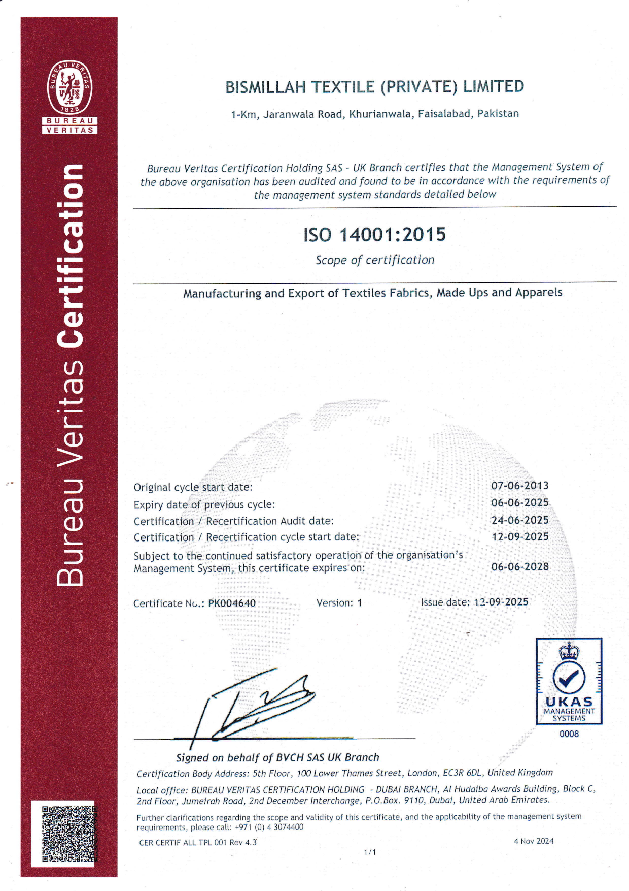
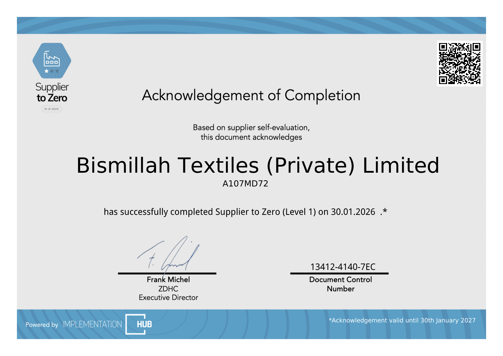

Materials
Yarn, dyes, chemicals and fabric constructions are selected against the confirmed product programme.
Quality is an evolving process. Bismillah Textiles describes an in-house system of quality and process control supported by modern machinery, dyes, chemicals and experienced technicians.


The company policy also considers environmental, social and security requirements in its management systems, with controls applied across production rather than only to the finished product.
Yarn, dyes, chemicals and fabric constructions are selected against the confirmed product programme.
Approved samples, measurements, construction, colour and finish expectations are kept clear.
In-house quality and process controls are applied through weaving, processing and made-up operations.
Quality, environmental, social and security expectations remain visible through the management process.
These records were carried in the previous company website; scope and validity should be rechecked with Bismillah Textiles before procurement decisions.

Environmental management certification published as valid until 06 June 2028.

Level 1 acknowledgement published as valid until 30 January 2027.
Quality is treated as an evolving process, not a fixed standard.
Specifications and quality expectations are agreed before production.